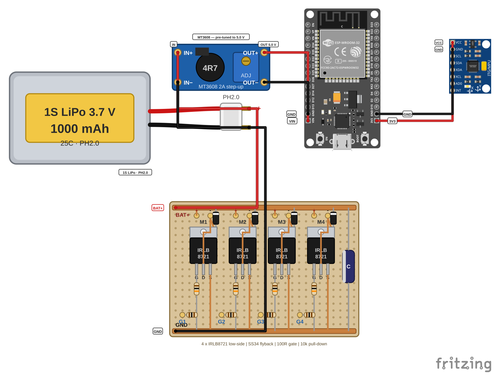

סורקים את הרחפן במולטימטר לפני שנכנסת סוללה ואז מחברים חשמל בפעם הראשונה — יחד עם המורה.
זה הרגע שבו הרחפן מקבל חשמל בפעם הראשונה. המורה מביא את הסוללה, מחבר אותה ולוקח אותה בחזרה בסוף השלב.
משקפי מגן לכל מי שנמצא בחדר, שיער אסוף ושרוולים מופשלים — גם למורה. מהשלב הזה המנועים יכולים לזוז.
אין פרופלורים על הרחפן — הם יושבים בקופסאות של המורה ונכנסים רק בשלבים הבאים. הכלל בכל התוכנית: פרופלורים נכנסים אחרונים — רגע לפני הסוללה — ויוצאים ראשונים, מיד אחרי שהיא יוצאת.
כבל USB לא מחובר. הכלל של כל התוכנית: סוללה בפנים — USB בחוץ; USB בפנים — סוללה בחוץ.
מנוע שמסתובב מעצמו: מושכים את התקע קודם ושואלים אחר כך. אין פרופלורים ולכן כל אחד יכול להגיע לתקע.
בשלבים שבהם כבר יש פרופלורים הכלל הפוך: אף יד לא מתקרבת לרחפן — לוחצים DISARM (כפתור הנטרול בטלפון, לומדים אותו בשלבים הבאים), אומרים STOP, מחכים עד שכל פרופלור נעצר ורק אז המורה מוציא את התקע, כי התקע יושב מתחת לפרופלורים.
הסוללה בידי המורה: הוא מוציא סוללה אחת מהשקית חסינת האש בשביל השלב הזה ומחזיר אותה לשקית בסופו — סוללה אחת בחוץ בכל רגע נתון.

מרכיבים משקפי מגן, אוספים שיער ומפשילים שרוולים — כל מי שנמצא בחדר, גם המורה.
מכוונים את המולטימטר למצב רציפות (זה שמצפצף) ובודקים בין שני חוטי הסוללה שיוצאים מלוח המוספטים — האדום מול השחור, בלי סוללה מחוברת: אין צפצוף.
בודקים גם לשונית מול לשונית, בכל זוג מוספטים: גם שם אין צפצוף.
סריקת לוח הפחמן: מעבירים את המולטימטר למצב אוהם (טווח 2M או אוטומטי). מחוש אחד נשאר על ראש בורג או על שפה של חור קדוח בלוח הפחמן — לא על הפנים המבריקות. המחוש השני עובר על הנקודות שברשימה למטה, אחת-אחת.
לוחות הפחמן מוליכים חשמל כמו חוט. לוח אלקטרוניקה שנוגע בהם הוא קצר — ולכן בכל נקודה המכשיר חייב להראות OL.
Ohm, 2M or auto BAT+ OL GND OL VIN OL 3V3 OL M1- .. M4- OL G1 .. G4 OL
המורה מביא סוללה אחת. מעבירים את המולטימטר לDC V ומודדים על תקע הסוללה: 3.7–4.2 V, כשהאדום הוא הפלוס.
מספר שלילי על המסך: החוטים במחבר של הסוללה הפוכים. הסוללה חוזרת לשקית חסינת האש עם מדבקה אדומה ואף פעם לא "פשוט הופכים" אותה.
הרחפן שוכב שטוח על השולחן וכבל ה-USB לא מחובר. המורה מחבר את הסוללה ואתם מסתכלים על המנועים: הנורית האדומה של ה-ESP32 נדלקת ואף מנוע לא זז.
רעד של פחות מעשירית שנייה במנוע האחורי הוא תקין. מנוע שממשיך להסתובב: מושכים את התקע.
נשארים ב-DC V ומודדים את שלוש המדידות שבטבלה למטה. רושמים כל תוצאה במקום שלה.
מבחן האצבע: נוגעים בגב האצבע בממיר MT3608, במייצב המתח של ה-ESP32 ובכל אחד מארבעת המוספטים: קרים או פושרים, אף פעם לא חמים. מחכים 30 שניות ונוגעים שוב.
המורה מנתק את הסוללה ולוקח אותה בחזרה.
רחפן שנדלק בשקט: 5 וולט למוח ו3.3 וולט לחיישן. הנורית דולקת, אף מנוע לא זז ושום דבר לא מתחמם.
רעד של פחות מעשירית שנייה במנוע האחורי ברגע החיבור — זה תקין, לא תקלה.